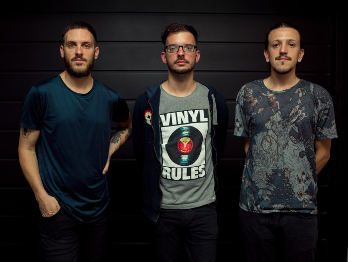

Colectivo mod~

colectivo mod~ es un grupo de creación e investigación integrado por Andrés Belfanti, Salvador Marino e Ismael Verde. Se inició en la ciudad de Córdoba en 2015. En 2016 realizó la performance-instalación Archivida, en el Observatorio Astronómico de Córdoba. Ese mismo año participó de la exposición Extraños: un profundo resonar, en el Museo Municipal Genaro Pérez, y realizó una instalación independiente titulada .cerodos. En 2017 su obra Codex~ fue seleccionada para participar del Antihomenaje Dadá, curado por Emilio García Wehbi y Ricardo Ibarlucia, parte de la Bienal de Performance 2017 (Bp.17)
"Codex~"
Organism made up of a network of digital processors, which exchange and modify texts. These are read and sent between computers as a stream of meaningless data, which is processed by the network and hidden almost totally to the spectator. The screens and the printer that make up the installation show a minimum part of the total operation. Mounted in space there are sensors that monitor the surrounding area and operate when they do not detect human presence. This work was selected for “Anti homenaje Dadá”. Bienal of performance 2017 (Buenos Aires, Argentina) – Cuarted by Ricardo Ibarlucia and Emilio Garcia Wehbi.
"cerodos"
Interactive installation that generates a hostile environment to the spectator taking as an expressive element the crudez of the noise generated by knocks on metal sheets. The installation consists of a metal rod in a ceramic base located in the center of the room. When the spectator drops a washer down the rod, it generates vibrations that are taken by acoustic sensors installed in the ceramic base. A microprocessor transforms the signal of the sensors and generates abrupt jumps in two modified speakers with screws, that cause violent shootings in two metal sheets suspended in front of them, while a monitor shoots fragments of the collective manifesto.